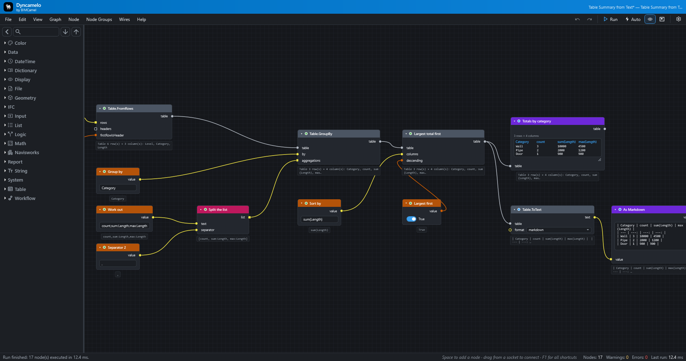

Dyncamelo for Navisworks
Dyncamelo brings Dynamo-style visual programming to Autodesk Navisworks 2024, 2025 and 2026. You drag nodes onto a canvas, wire the output of one into the input of the next and press Run. The graph reads and changes the model you have open: no code, no macros, no SDK boilerplate.
Search a federated model by property, colour-code it by system, create selection sets in bulk, take quantities out to Excel, triage clashes by rule and make a saved viewpoint for each issue, as graphs you can save, share and run again.

The editor with the "Table Summary from Text" sample after a run: nodes, wires, the values under each node and a Watch Table. It docks inside Navisworks as a pane, and has a light theme too.
Where to start
| I want to… | Read |
|---|---|
| Install it | Installation, after a look at the requirements |
| Build my first graph in ten minutes | Your first script |
| Understand how graphs work | Concepts, then Inputs, outputs and kinds |
| Find a node and see its inputs and outputs | Node reference, or search the whole site with the box at the top |
| Learn from a finished graph | Sample scripts and Recipes |
| Exchange data with IFC, BCF, Excel or CSV | IFC, BCF, Excel and CSV |
| Run a tested script without the node editor | The Script Player |
| Fix a problem | Troubleshooting and the FAQ |
| Update or remove Dyncamelo | Updating, Uninstalling |
| Write my own nodes in C# | Writing your own nodes |
What it can do
- A real dataflow engine. Nodes run in dependency order, results are cached, and when you change one input only the nodes after it run again. Run by hand, or let it re-run after every edit.
- Lists work the way Dynamo users expect. Feed a list into an input that wants one value and the node runs once per item; lacing (shortest, longest, cross product) and list levels (
@L) choose how lists pair up. - Loops over items. Put any nodes between
Loop.ItemandLoop.Collectand they run once per item, in order, so jobs like "isolate, zoom, save a viewpoint, next" use the real nodes. - A deep Navisworks library. Properties and quantities, Find-Items-grade search, selection sets, colour, transparency and hide overrides, transforms, saved viewpoints, clash tests and results, BCF exchange, IFC export, grids, TimeLiner, and CSV, Excel and HTML reports. The general library adds maths, logic, text, dates, lists, dictionaries, tables and files.
- Robust by design. A node that fails shows its own error and never stops the graph run or Navisworks.
- Portable graphs. A graph is a small, versioned, plain-text
.dycfile that you can email, review and keep in version control. - The Script Player. Run a saved graph from a simple form, for colleagues who should not have to open the editor.
- Extensible. A public static C# method with a couple of attributes is a node.
See Concepts for the vocabulary, and the node reference for every node.
Good to know before you start
- Dyncamelo is free for personal and other noncommercial use. Using it for your job at a company, or in a paid project, needs a commercial licence from BIMCamel. See Licence.
- It sends nothing about you or your models anywhere. It makes one optional request a day to look for a newer version, which you can switch off. See Privacy and safety.
- A graph is a program. Only run graphs you trust. Dyncamelo asks before it runs a graph from a file that can run programs, use the network or change files.
- Only Navisworks Manage 2024 has been seen running it in the field so far; 2025, 2026 and Simulate are built and installed the same way but not yet confirmed. The requirements page says exactly what is and is not verified.
- Dyncamelo is not affiliated with or endorsed by Autodesk. Autodesk, Navisworks, Revit and Dynamo are trademarks of Autodesk, Inc.
This site belongs to the version it was built from (shown at the top of every page). The source code, issues and release notes are on GitHub.